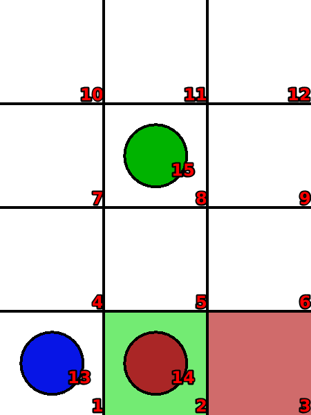
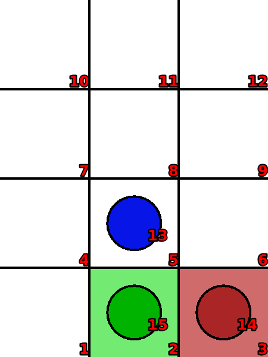

Sokoban
Language: Teaching Script Entire Dialog
World states:
init-sokoban.world
final-sokoban2.world
Primitive concepts used
Object types:
|
locations, blocks |
Colors:
|
red, blue
|
| Spatial relations: |
on, below, between |
| Functions: |
count of, less than |
Teaching Dialog (Rosie in bold)
TEACHER: The name of the puzzle is sokoban.
Please setup the puzzle.
TEACHER: Load init-sokoban.

Ok.
TEACHER: Ok.
Please describe the actions, goals, and failure conditions.
TEACHER: The name of an action is move-block.
What are the conditions of the action.
TEACHER: If a blue block is adjacent to a clear location then you can move the block onto the location.
Please describe the meaning of 'clear' in this context.
TEACHER: If a location is not below an object then it is clear.
Ok, I've learned the meaning of 'clear' for this context.
Please describe the meaning of 'adjacent' in this context.
TEACHER: If a location is next to an object but it is not diagonal with the object then it is adjacent to the object.
Ok, I've learned the meaning of 'adjacent' for this context.
I've learned the action.
TEACHER: The name of an action is push-block.
What are the conditions of the action.
TEACHER: If a covered location is between a clear location and a blue block then you can move a block on the covered location onto the clear location plus move the blue block onto the covered location.
Please describe the meaning of 'covered' in this context.
TEACHER: If a location is below an object then it is covered.
Ok, I've learned the meaning of 'covered' for this context.
I've learned the action.
TEACHER: The solution has eight steps.
Ok.
TEACHER: Load final-sokoban2.

Ok.
TEACHER: The goal is that a red block is on a red location and a green block is on a green location.
Please setup the goal state.
TEACHER: Ok.
I've learned the goal.
TEACHER: Done.
I've learned sokoban. Should I try to solve the puzzle?
TEACHER: No.
Ok.